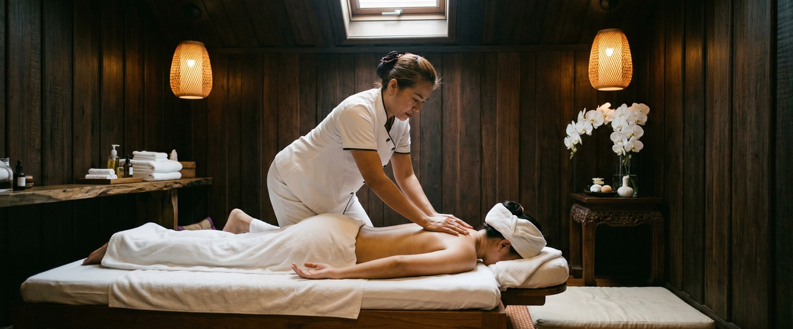
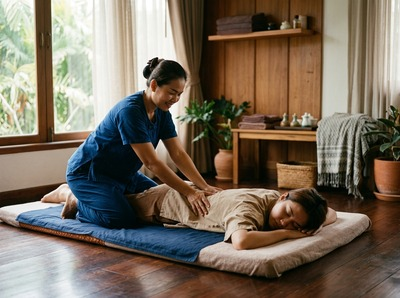

If your body feels tight, stiff, or restricted in its movement, you are not alone.

Poor flexibility is one of the most common physical complaints among adults, affecting everything from how you sit at a desk to how you recover after exercise. Thai massage therapy in Greenock offers a practical, evidence-informed route to restoring suppleness, improving range of motion, and helping you move through daily life with less effort and discomfort.
Flexibility is the range of movement in a joint or series of joints. It depends on the length and suppleness of the muscles crossing those joints. When muscles shorten through inactivity, overuse, or long periods in one position, range of motion narrows. Everyday movements become restricted.

Declining flexibility is not just an age issue. Desk work, repetitive training, inactivity, and scar tissue from old injuries all cause stiffness. NHS guidance on strength and flexibility confirms that poor flexibility raises injury risk and limits daily tasks.
Left unaddressed, tight muscles create postural imbalances. These feed a cycle of strain and long-term discomfort.
Thai massage targets flexibility through several linked mechanisms. Pressure raises tissue temperature. This increases muscle elasticity and helps fibres lengthen more easily.
Sustained pressure also breaks down fascial adhesions. These are dense bands of tissue that restrict movement. Breaking them down restores glide between muscle layers.
Research supports this. A review published on PubMed found that massage improved shoulder range of motion across multiple planes. A separate study found that even short sessions produced a clear increase in hip flexion.
Traditional Thai Massage uses assisted stretching and acupressure along the body's Sen energy lines. This makes it well suited to whole-body mobility. Thai Sports Massage adds deep-tissue work to release the muscle groups that limit performance or recovery.
You can book your flexibility session online and start working toward lasting improvement in how your body moves.
At Thai Massage Greenock on South Street, Jariya begins every session with a conversation. She asks how your body is feeling and where movement feels restricted. For flexibility-focused treatments, she draws on her training at Bangkok's Wat Po temple — the recognised birthplace of traditional Thai massage.
This gives her access to the full range of assisted stretching and acupressure techniques that make this therapy so effective for mobility goals. Depending on your needs, Jariya may combine Traditional Thai Massage, which works through assisted stretch sequences fully clothed, with Thai Sports Massage for deeper fascial release.
Each session builds on notes from your previous visits. Your treatment evolves with your progress. This personal, therapist-led approach is what sets Thai Massage Greenock apart from generic spa treatments in Inverclyde.
Almost anyone who moves, works, or sits benefits from better flexibility. Office workers holding a fixed posture for eight or more hours a day, runners and cyclists whose training shortens specific muscle chains, and tradespeople doing repetitive physical work all see real results. So do older adults noticing a gradual loss of ease in movement, and people returning from injury.
If stiffness is limiting your sport, your work, or your daily life, arrange a session with Jariya and begin addressing it directly.
Massage addresses the root causes of poor flexibility. It raises tissue temperature, breaks down adhesions, and reduces muscle tension. All of this makes stretching more effective.
Research shows that massage alone produces clear improvements in range of motion. Used alongside regular movement and stretching, it speeds up results significantly.
Many clients notice a change in how freely they move after a single session. Lasting improvements usually require a short course of treatments — typically four to six sessions. This is especially true when restricted flexibility has built up over months or years.
Jariya will assess your progress and adjust the approach at each visit.
Traditional Thai Massage is the most direct treatment for flexibility. It uses structured assisted stretching that works through every major joint and muscle group. Thai Sports Massage adds deeper fascial release for specific areas of restriction.
Jariya will advise which combination suits your goals.
In most cases, restricted flexibility comes from lifestyle factors. Prolonged sitting, repetitive movement patterns, and poor recovery after exercise are the usual causes.
However, if stiffness comes with significant pain, swelling, or a sudden loss of range of motion, speak to your GP. It is worth ruling out an underlying condition before starting massage therapy.
Some mild muscle tenderness in the 24 to 48 hours after a session is normal. This is especially true after deeper work or assisted stretching on tight areas. It is the body's response to tissue being worked.
Staying hydrated helps. If you feel significant discomfort, let Jariya know so she can adjust her technique.
Yes. Scar tissue from old injuries is a common cause of localised stiffness and restricted movement. Targeted massage can help soften and remodel scar tissue over time. This restores elasticity to the affected area.
Jariya takes a full history at your first visit and works carefully around any areas of previous injury or sensitivity.